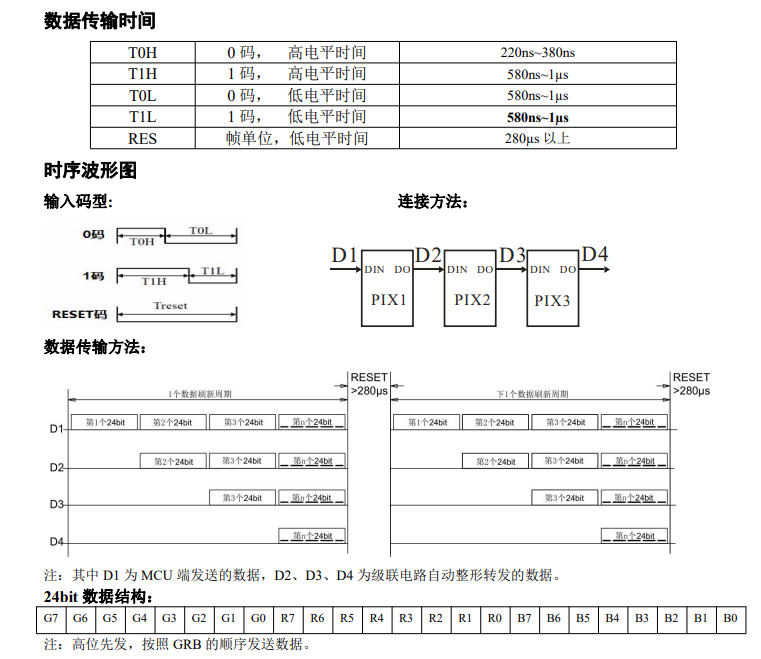
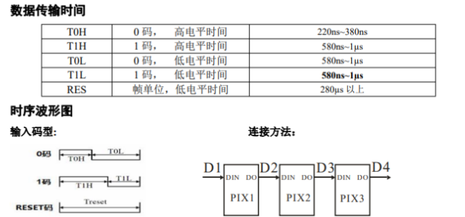
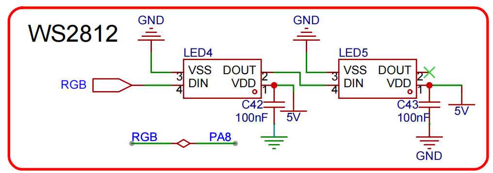
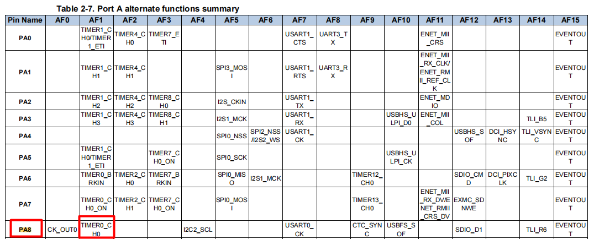
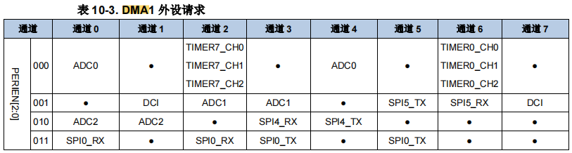
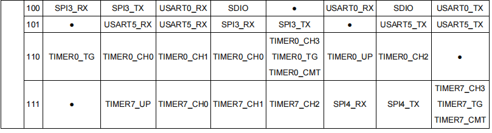

<!DOCTYPE lake>
<p data-lake-id="u6d05ec48" id="u6d05ec48"><span data-lake-id="u83844860" id="u83844860"> WS2812B是一个集控制电路与发光电路于一体的智能外控LED光源。具有较小体积，其外型尺寸与一个3535LED灯珠相同，每个元件即为一个像素点。像素点内部包含了智能数字接口数据锁存信号整形放大驱动电路，还包含有高精度的内部振荡器和可编程定电流控制部分，有效保证了像素点光的颜色高度一致。</span></p><p data-lake-id="ud4a25c36" id="ud4a25c36"><span data-lake-id="u5da07c61" id="u5da07c61">数据协议采用单线归零码的通讯方式，像素点在上电复位以后，DIN端接受从控制器传输过来的数据，首先送过来的24bit数据被第一个像素点提取后，送到像素点内部的数据锁存器，剩余的数据经过内部整形处理电路整形放大后通过DO端口开始转发输出给下一个级联的像素点，每经过一个像素点的传输，信号减少24bit。像素点采用自动整形转发技术，使得该像素点的级联个数不受信号传送的限制，仅仅受限信号传输速度要求。</span></p><p data-lake-id="uc63b72a3" id="uc63b72a3"><span data-lake-id="u48850332" id="u48850332">高达 2KHz 的端口扫描频率，在高清摄像头的捕捉下都不会出现闪烁现象，非常适合高速移动产品的使用。280μs以上的 RESET 时间，出现中断也不会引起误复位，可以支持更低频率,价格便宜的MCU。LED具有低电压驱动、环保节能、亮度高、散射角度大、一致性好超、低功率及超长寿命等优点。将控制电路集成于LED上面，电路变得更加简单，体积小，安装更加简便。  </span></p><p data-lake-id="ua06df441" id="ua06df441"><span data-lake-id="ub18812f5" id="ub18812f5">​</span><br/></p><p data-lake-id="u77f48271" id="u77f48271"></p><p data-lake-id="u2983c2af" id="u2983c2af"><br/></p><p data-lake-id="u5f18c24d" id="u5f18c24d"><span data-lake-id="u39693b57" id="u39693b57">在这个文档里面我们可以看到,要想驱动ws2812,我们就需要给灯发送24位的数据,这24位的数据代表的就是灯的颜色, 这里我们需要注意的是灯的颜色是GRB的顺序.</span></p><p data-lake-id="ufc352546" id="ufc352546"><span data-lake-id="ua84a6d9d" id="ua84a6d9d">我们该如何发送这些数据呢? 在上图中我们可以看到数据虽然是24位, 但是每一位要么是0,要么是1, 我们只需要按照规则发送0码和1码即可.</span></p><p data-lake-id="u2e5586fc" id="u2e5586fc"></p><ul list="u17a58152"><li data-lake-id="ue3c8fabb" fid="ueb56675a" id="ue3c8fabb"><span data-lake-id="u79d66a1c" id="u79d66a1c">0码:</span></li></ul><ul data-lake-indent="1" list="u17a58152"><li data-lake-id="u7b4f7d3f" fid="ueb56675a" id="u7b4f7d3f"><span data-lake-id="ucace699a" id="ucace699a">T0H高电平时间范围: 220ns~380ns</span></li><li data-lake-id="u83240790" fid="ueb56675a" id="u83240790"><span data-lake-id="uf14f7d27" id="uf14f7d27">T0L低电平时间范围: 580ns~1000ns</span></li></ul><ul list="u17a58152" start="2"><li data-lake-id="uc07f8d52" fid="ueb56675a" id="uc07f8d52"><span data-lake-id="u662340e9" id="u662340e9">1码:</span></li></ul><ul data-lake-indent="1" list="u17a58152"><li data-lake-id="uf8687335" fid="ueb56675a" id="uf8687335"><span data-lake-id="u82bc68eb" id="u82bc68eb">T1H高电平时间范围: 580ns~1000ns</span></li><li data-lake-id="ua814172a" fid="ueb56675a" id="ua814172a"><span data-lake-id="u70117f3e" id="u70117f3e">T0L低电平时间范围: 580ns~1000ns</span></li></ul><p data-lake-id="u390f2158" id="u390f2158"><span data-lake-id="u5f1b0773" id="u5f1b0773">​</span><br/></p><p data-lake-id="u12d17ae9" id="u12d17ae9"><span data-lake-id="u6f97fe04" id="u6f97fe04">从上图输入码型我们可以看到, 0码和1码高低电平时间之和是相同的, 所以我们可以考虑按照一定周期去控制高低电平.</span></p><p data-lake-id="ua6e7f999" id="ua6e7f999"><span data-lake-id="u8419b00d" id="u8419b00d">我们假定周期时长为1050ns, 那么我们该如何得到这么长的周期呢?  答案显而易见,我们可以考虑使用定时器.</span></p><p data-lake-id="u2184afb7" id="u2184afb7"><span data-lake-id="ub1e3a177" id="ub1e3a177">​</span><br/></p><p data-lake-id="u9abdd7d9" id="u9abdd7d9"><span data-lake-id="ufeb6412c" id="ufeb6412c">已经GD32F470定时器的主频为240Mhz, 我们可以来推导一下,要多少个计数值才能达到1050ns</span></p><span class="yuque-card-unsupported">[codeblock]</span><p data-lake-id="u65596d17" id="u65596d17"><span data-lake-id="u5c698c04" id="u5c698c04">也就是每隔4.16ns, 计数值会增加1,如果我们想要计时1050ns, 那么我们需要 1050ns/4.16ns = 252个计数值</span></p><p data-lake-id="udff4c7cc" id="udff4c7cc"><span data-lake-id="ub2f45fe5" id="ub2f45fe5">下面我们进一步推导0码和1码需要的计数器值:</span></p><p data-lake-id="u94bb1801" id="u94bb1801"><span data-lake-id="u3e7c4564" id="u3e7c4564">0码: 高电平对应的计数应为300/4.16 = 72</span></p><p data-lake-id="u5b556fd7" id="u5b556fd7"><span data-lake-id="ua3fa883d" id="ua3fa883d">1码: 高电平对应的计数应为252 - 72 = 180</span></p><p data-lake-id="u5fa35b8e" id="u5fa35b8e"><span data-lake-id="ud62a2b65" id="ud62a2b65">有了这些参数之后, 下面我们就可以来初始化我们的定时器配置啦</span></p><p data-lake-id="u0d139280" id="u0d139280"></p><p data-lake-id="u72e6c182" id="u72e6c182"><span data-lake-id="u6ea6770c" id="u6ea6770c">​</span><br/></p><p data-lake-id="ue7ae987e" id="ue7ae987e"></p><span class="yuque-card-unsupported">[codeblock]</span><p data-lake-id="uc49d3b58" id="uc49d3b58"><br/></p><p data-lake-id="u00334708" id="u00334708"><span data-lake-id="u464882f7" id="u464882f7">为了提高控制效率, 我们使用配置一下DMA, 当数据发生变化之后, 自动更新数据到外设</span></p><p data-lake-id="ub09c2f45" id="ub09c2f45"></p><p data-lake-id="u530a76ac" id="u530a76ac"></p><p data-lake-id="u7e77d2d7" id="u7e77d2d7"><br/></p><span class="yuque-card-unsupported">[codeblock]</span><p data-lake-id="uf1d057d4" id="uf1d057d4"><br/></p><p data-lake-id="u51a504a5" id="u51a504a5"><span data-lake-id="u66535cc0" id="u66535cc0">控制灯的色彩</span></p><span class="yuque-card-unsupported">[codeblock]</span>